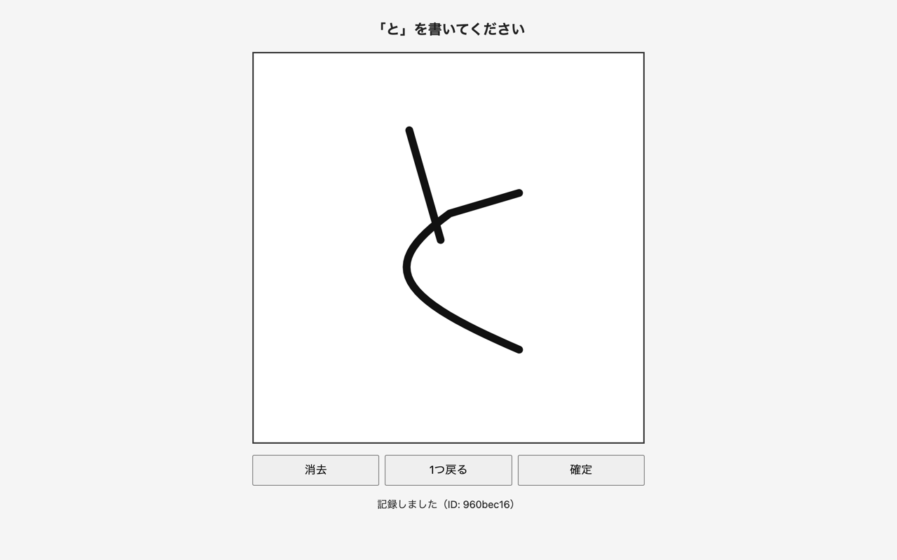

機能を実装するたびに、この文書に節を足していきます。最終更新: 2026-11-28
ひらがなの「と」を 1 文字書いてもらい、その字を分析して結果を返すアプリです。結果として返す予定のものは次の 4 つです。
くわしくは docs/development.md にあります。要点だけ載せます。
| 項目 | 内容 |
|---|---|
| 構成 | 既存の front/（フロントエンド）と back/（バックエンド）をそのまま使う |
| 言語 | React、TypeScript、Python |
| 実行環境 | 各自の PC の Docker で起動し、localhost で確認する。デプロイはあとで行う |
| 対象の端末 | PC のブラウザ（マウス操作）。スマホなどはあとで考える |
| API | フロントからは相対パス（/api/...）で呼ぶ。内容は docs/api.md に整理する |
| 軽さ | デザインを入れるまでは見た目を最小限にし、ライブラリを足さない |
| 進め方 | 機能を 1 つずつ、部品に分けて実装する。指示された範囲の外は実装しない |
docker compose up --build -d
# 画面: http://localhost:5173いま実装されているのは「『と』を書く」と、送られた画像をバックエンドが決まった大きさに整えて保存するところまでです。分析と結果の表示はまだありません。
| 番号 | 機能 | 状態 | 備考 |
|---|---|---|---|
| 01 | 「と」を書くキャンバス | 実装済み | 消去、1 つ戻る、確定。確定で、画像を 1024 と 256 の 2 つの大きさに整えて保存する（保存先は手元の代わり） |
| — | 初期画面 | 未着手 | |
| — | ユーザーネームの変更 | 未着手 | メイン画面（書く画面）の右上から変えられるようにする。あとで実装する |
| — | 待機中の画面 | 未着手 | |
| — | 結果の画面 | 未着手 | くつした、メッセージ、もう一度、シェア |
| — | いろんな「と」の一覧 | 未着手 | 簡単なユーザー名つき |
| — | くつしたの一覧 | 未着手 | |
| — | 画像の保存、シェア | 未着手 |
未着手の行は、手描きのメモにあった項目と、あとで作ると決めた項目です。実装するときに番号を付け、節を足します。

| ボタン | 動き | 押せないとき |
|---|---|---|
| 消去 | 書いた線をすべて消す | 何も書いていないとき。記録している最中 |
| 1つ戻る | 最後に書いた線を 1 本取り消す。続けて押すと、さらに 1 本ずつ戻る | |
| 確定 | 書いた内容をバックエンドに送り、記録する。成功すると「記録しました（ID: 先頭 8 文字）」と表示する |
devicePixelRatio）。高精細な画面でも線がぼやけない。| 画面 | 枠の画素数 | 送る画像 |
|---|---|---|
| 密度 2、枠が 556 ピクセル | 1112 × 1112 | 1112 × 1112 |
| 密度 1、枠が 556 ピクセル | 556 × 556 | 1024 × 1024 |
| 密度 1、小さいウィンドウで枠が 216 ピクセル | 216 × 216 | 1024 × 1024 |
確定を押すと、POST /api/drawings に次の内容を送ります。線のデータ（字、座標の基準、線）の形は、分析の担当の資料に合わせています。くわしい形と、資料との対応は docs/api.md にあります。
| 項目 | 内容 |
|---|---|
字（target） | 書いた字。いまは「と」の固定。バックエンドが、受け取れる字（いまは「と」だけ）であることを確かめる。あとで字が増えても形が変わらないようにするための項目 |
座標の基準（canvas） | 常に 1024 × 1024。画面の枠が何ピクセルでも、枠を 1024 × 1024 とみなした座標で送る（保存する画像と同じ基準）。同じ線は、どの端末で書いても同じ座標になる |
線（strokes） | 線ごとに、入力の種類（pointerType）と、点の並び（points）。押してから離すまでが 1 本。消した線は入らない |
| 入力の種類 | その線を書きはじめたときの種類。mouse、touch（指）、pen のどれか |
| 点 | [x, y, t, pressure] の 4 つの数の並び |
画像（image） | 白地に黒の線で描いた PNG。正方形で、一辺は 1024〜4096 ピクセル |
幅、高さ（width、height） | 送った画像の画素数。バックエンドが、実際の画像と合っていること、正方形であること、1024 以上であることを確かめる |
点の 4 つの数は、次のとおりです。送る量を減らすため、フロントが丸めて送ります。
| 数 | 内容 | 丸め |
|---|---|---|
x、y | 枠の左上を (0, 0)、一辺を 1024 とした位置。枠の外へはみ出した線は、枠の一辺ぶん外側（-1024 と 2048）で止める | 小数 1 桁 |
t | 最初の線を書きはじめた瞬間を 0 とした経過ミリ秒。線の最後の点は、離した時刻 | 整数 |
pressure | 筆圧（0〜1）。マウスは常に 0.5。ペンと指は、端末が報告する値。離した時刻の点には、その線の直前の点の筆圧を入れる（離した瞬間は 0 と報告されるため） | 小数 2 桁 |
{
"target": "と",
"canvas": { "width": 1024, "height": 1024 },
"strokes": [
{ "pointerType": "mouse", "points": [[409.6, 184.3, 0, 0.5], [414.1, 201.9, 21, 0.5]] }
],
"image": "data:image/png;base64,…",
"width": 1112,
"height": 1112
}t から求めて、台帳に入れる。intent）は、ITO に入れるかどうかが決まっていないので、送っていない。バックエンドは、受け取った画像を次のように整えて保存します。
1 回の確定につき、次の 3 つを置き、台帳に 1 行書きます。<id> は記録の ID です。くわしい形は docs/data.md にあります。
| 置くもの | 名前（キー） |
|---|---|
| 1024 × 1024 の画像 | drawings/<id>_1024.png |
| 256 × 256 の画像 | drawings/<id>_256.png |
| 線のデータ | drawings/<id>.json.gz（字、座標の基準、線の 3 項目だけを入れた JSON を、gzip で圧縮したもの。分析の担当の資料の形のまま読める。ふつうの「と」で約 0.65KB） |
台帳の 1 行（表 drawings） | ID、日時、上の 3 つの名前、字、時間、線の本数、点の合計（時間、本数、点の合計は、バックエンドが線のデータから求める）。分析結果と一覧のための列（くつした、フォント、読み解き、メッセージ、名前、公開するか）は用意だけしてあり、まだ使わない |
/app/data/objects/）と SQLite（/app/data/ito.sqlite3）に書く。差し替えるのは back/src/storage.py と back/src/db.py だけで済むようにしてある。docker compose exec backend ls -l data/objects/drawings # 保存された画像と線のデータを見る| ファイル | 役割 |
|---|---|
front/src/components/WritingCanvas.tsx | 書く枠。線を覚える、消す、1 本戻す、画像にする |
front/src/App.tsx | 画面。枠とボタン、結果の表示 |
front/src/api/drawings.ts | API を呼ぶところ |
front/src/index.css | 最小限の見た目 |
back/src/drawings.py | 受け取った内容を確かめ、画像を整えて、保存を頼む |
back/src/storage.py | 画像と線のデータの置き場（手元ではフォルダ） |
back/src/db.py | 台帳（手元では SQLite） |
back/src/settings.py | データの置き場所の設定 |
| 項目 | いまの仮の形 | 決めたいこと |
|---|---|---|
| 相談 記録の保存先 | 手元の代わり（コンテナの中のフォルダと SQLite）。コンテナを作り直すと消える。本番は R2 と D1 の予定で、まだつないでいない | コンテナの中の Python から R2 と D1 にどうつなぐか。手元のデータを PC 側のフォルダに残すか（compose.yaml の変更が要る） |
| 相談 深層学習に渡す画像 | 256 × 256、白黒 1 チャネル、白地に黒。枠の全体をそのまま縮小したもの | この形でよいか。余白を切る、中央に寄せるなどの加工が要るか |
| 相談 「時間」の意味 | 最初の線の書きはじめから、残っている最後の線を離すまで。線の間の休みも含む。全部消すと 0 から数え直す | この測り方でよいか |
| 相談 お題の字と意図 | 字（target）は「と」の固定で送り、保存している。意図（intent）は送っておらず、保存もしていない | 分析の担当の資料にある、お題の字と意図を ITO に入れるか。入れるなら、どの画面で選ぶか |
| 相談 画像を誰が描くか | フロントが、覚えている線から描いて送る。バックエンドは、それを縮小して保存する | フロントが描くままにするか、サーバーが線のデータから描くか（その場合、画像は送らなくなる） |
| 確定のあとの動き | 枠の中身を残し、結果を 1 行表示する | 待機中の画面に進むか、枠を空にするか |
| 分析結果の API | なし | 送る内容と返る内容の形 |
| 記録を残す期間 | 消していない | いつまで残すか。消す手順 |
| 日付 | 内容 |
|---|---|
| 2026-11-28 | 仕様書を作成。機能 01「『と』を書くキャンバス」を追加 |
| 2026-11-28 | 機能 01: ボタンを押すと枠やボタンの位置がずれる不具合を修正。枠の大きさをウィンドウの幅と高さに合わせるように変更 |
| 2026-11-28 | 機能 01: 不具合の調査で見つかった点を修正（点だけの線が見えない、枠の外へ大きく引くと記録できない、右クリック後に線が続く、特定の大きさで枠が壊れる、拡大率を変えるとぼやける、応答がないと止まる、API の入力チェックの漏れ） |
| 2026-11-28 | 機能 01: 線が 501 本以上あると確定が必ず失敗する不具合を修正。線の本数の上限（500 本）をやめ、書ける量を点の合計 20 万個までに変更。上限に達したときの案内を追加。送る位置と時刻を丸めるように変更 |
| 2026-11-28 | 機能 01: 確定のときの保存の仕組みを変更。送る画像を、線から描き起こした一辺 1024 以上の正方形にした。バックエンドで白黒 1 チャネルにし、1024 × 1024 と 256 × 256 の 2 枚に縮小して、線のデータ、台帳の 1 行と一緒に保存する（置き場所は手元の代わりのフォルダと SQLite）。画素密度の記録をやめた。保存の途中で失敗したときは、途中まで置いたものを消す |
| 2026-11-28 | 機能 01: 確定のときに送る線のデータと、その保存の形を、分析の担当の資料に合わせて変更。字（target）と座標の基準（canvas、常に 1024 × 1024）を足し、線ごとに入力の種類、点は [x, y, t, pressure] の並びにした（位置は 1024 基準、経過ミリ秒は整数、筆圧はマウスで 0.5）。時間は送らず、バックエンドが求める。線のデータは gzip で圧縮して保存する（.json.gz）。台帳に字の列を足した。画面の見た目と操作は変えていない |